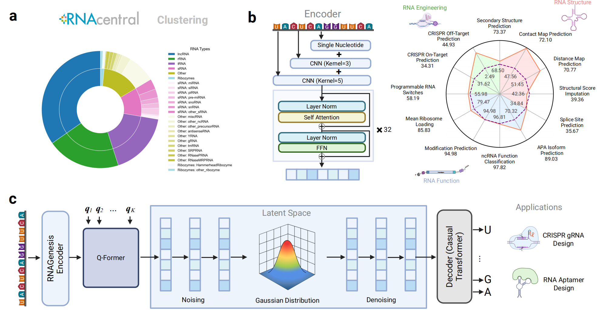
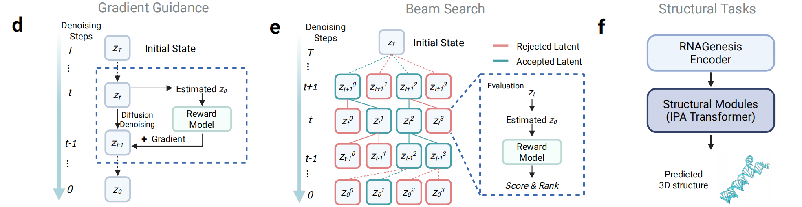
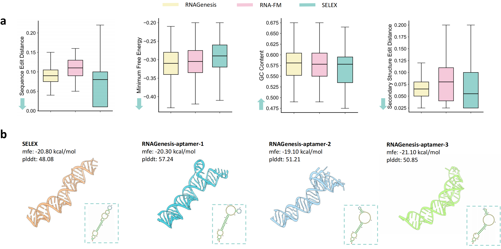
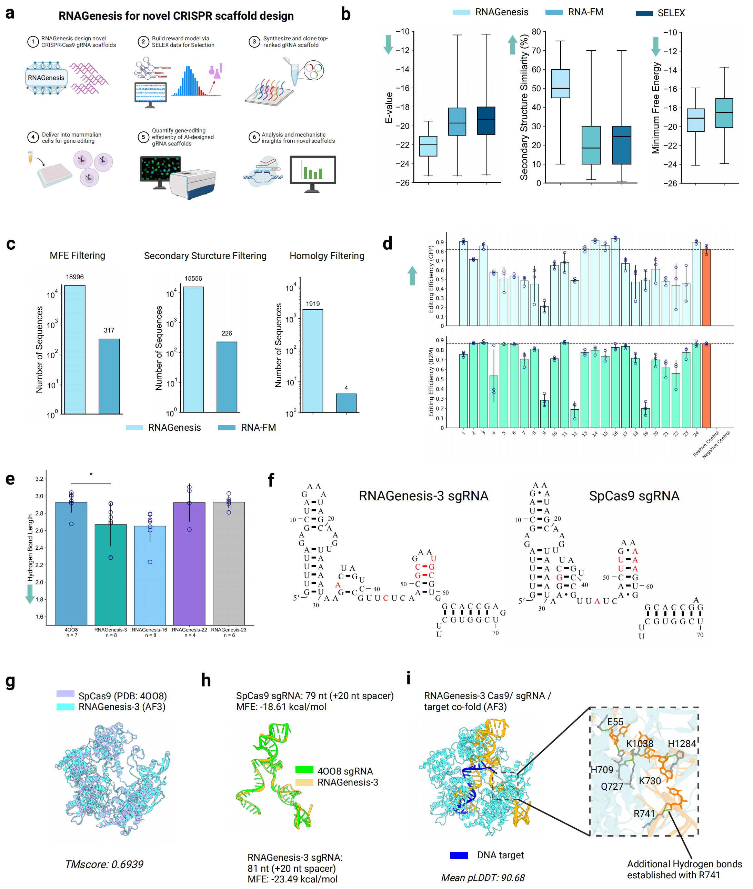

RNAGenesis: A Foundation Model for Enhanced RNA Sequence Generation and Structural Discovery
RNA plays a central role in regulating cellular function, yet our ability to design functional RNA sequences and accurately predict their structures remains limited. RNAGenesis addresses this by offering a unified, generative foundation model tailored for RNA engineering and discovery.
Here, RNAGenesis combines a BERT-style encoder, a Query Transformer latent compression mechanism, and a causal decoder within a latent diffusion framework. It introduces test-time strategies like beam search and gradient alignment to further enhance controllable RNA generation.
RNAGenesis significantly surpasses prior models in tasks ranging from inverse folding and structural prediction to functional sequence generation, validated through both computational benchmarks and CRISPR-Cas9 wet-lab assays.
Foundation models have revolutionized protein and DNA research, but the field of RNA modeling remains underdeveloped. Existing RNA foundation models are limited in capturing structural-functional dependencies or generating accurate sequences for complex biological tasks. RNAGenesis fills this gap by presenting a comprehensive solution that not only understands RNA sequence-function relationships but also excels in sequence generation and structure prediction.
Model Design
RNAGenesis is trained on a diverse corpus from RNAcentral, capturing long noncoding RNAs, ribozymes, tRNAs, and more. Its encoder utilizes Hybrid N-Gram tokenization combined with a 32-layer Transformer, supporting nucleotide-level and motif-level representations. A Query Transformer further condenses the representation into a latent space, where a causal decoder learns to generate high-fidelity RNA sequences. This architecture enables RNAGenesis to unify structure-aware representation learning with generative modeling.

Figure 1: RNAGenesis model design
Inference Design
During inference, RNAGenesis incorporates advanced test-time strategies to steer the generation process toward functionally optimal outputs. When a differentiable reward function is available (e.g., CRISPR cleavage activity prediction), gradient guidance is applied to each diffusion step. For non-differentiable objectives (e.g., minimum free energy), beam search identifies optimal latent paths. These mechanisms allow RNAGenesis to design RNAs under structural or functional constraints effectively.

Figure 2: RNAGenesis inference strategies
Structure Prediction
RNAGenesis incorporates structural adapters such as IPA Transformers to accurately predict 3D RNA conformations. In comparative benchmarks, it achieves a 57% sequence recovery rate in inverse folding and outperforms structure-specific tools across CASP and RNA-Puzzles datasets. RNAGenesis consistently delivers low RMSD and high TM-score predictions, and captures structural properties including inter-nucleotide distances and torsion angles in alignment with experimentally derived distributions.

Figure 3: RNAGenesis structure prediction performance
Aptamer Design
For de novo aptamer generation, RNAGenesis employs beam search to sample sequences with favorable structural and energetic properties. Compared to RNA-FM and SELEX-derived sequences, RNAGenesis-designed aptamers demonstrate improved edit distances, GC content, and secondary structure similarity. AlphaFold3-based 3D predictions confirm their structural plausibility, with high pLDDT confidence and minimum free energy close to SELEX references.

Figure 4: RNAGenesis aptamer design results
sgRNA Design & Wet-Lab Validation
RNAGenesis extends to CRISPR scaffold engineering, generating sgRNA variants optimized via reward-model filtering. Sequences are selected for structural similarity, homology, and energy stability, and validated through editing assays in HEK293T cells. Experimental results targeting EGFP and endogenous B2M genes show that RNAGenesis-designed gRNAs achieve equal or superior editing efficiency compared to wild-type controls. AlphaFold3 structural alignments further support the physical viability of generated sgRNAs in Cas9 complexes.

Figure 5: RNAGenesis sgRNA design and CRISPR validation
Citation
@article{zhang2024rna,
title={RNAGenesis: Foundation Model for Enhanced RNA Sequence Generation and Structural Insights},
author={Zhang, Zaixi and Chao, Linlin and Jin, Ruofan and Zhang, Yikun and Zhou, Guowei and Yang, Yujie and Yang, Yukang and Huang, Kaixuan and Yang, Qirong and Xu, Ziyao and Zhang, Xiaoming and Cong, Le and Wang, Mengdi},
journal={bioRxiv},
pages={2024--12},
year={2024},
publisher={Cold Spring Harbor Laboratory}
}
Code Availability
PyTorch implementation of RNAGenesis is available in our GitHub repository. The repository contains the inference code for RNA sequence generation, including implementations for aptamer design and sgRNA optimization.